Gebruikershandleiding
Reis Dossier Systeem voor medewerkers, managers en beheerders
- Voor wie
- medewerkers en managers die dagelijks boekingen beheren (deel I en II), en beheerders van het platform (deel III)
- Versie
- 12 november 2026
- Schermen
- echte schermen uit de app; alle namen, bedragen en boekingen zijn fictief
- Techniek?
- die staat in de technische handleiding (
docs/handleiding.md); hier komt niets voor wat je niet nodig hebt
Inhoud
Deel I · Werken met RDS (medewerker en manager)
- Welkom bij RDS
- Inloggen en uitloggen
- Het scherm leren kennen
- Boekers en prospects
- De boeking
- Reizigers, verblijven en activiteiten
- Documenten
- Betalingen
- Meldingen
- Templates
- De boekingsflow: van aanvraag tot afgerond
- Wat ziet de klant?
Deel II · Instellingen
Deel III · Beheerder
Bijlagen
Nieuw? Lees hoofdstuk 1 tot en met 3 en daarna hoofdstuk 12, De boekingsflow: dan weet je hoe een boeking van aanvraag tot afgeronde reis loopt. De hoofdstukken 4 tot en met 11 beschrijven elk onderdeel in detail; sla op wat je nodig hebt.
Managers vinden het inrichten (sjablonen, betalingsschema, stamgegevens, collega's) in hoofdstuk 15. Beheerders van het platform lezen deel III.
Printen kan: elk hoofdstuk begint op een nieuwe pagina en tabellen, schermen en kaders worden nooit over twee pagina's verdeeld.
Rollen in deze handleiding: Medewerker, Manager en Beheerder. Waar iets alleen voor een rol is, staat dat erbij.
Werken met RDS
Voor medewerkers en managers: de onderdelen van een boeking, de meldingen, de sjablonen en de volledige boekingsflow.
1. Welkom bij RDS
RDS is het dossiersysteem van de reisorganisatie. Per reis houd je één boeking (een dossier) bij: wie boekt, wie er meereist, welke verblijven en activiteiten erbij horen, welke offerte, documenten en e-mails er zijn uitgegaan, wat er moet worden betaald en wat al is betaald. Alles staat bij elkaar, voor iedereen in je organisatie, en je ziet uitsluitend de gegevens van je eigen organisatie.
RDS doet veel werk zelf: het maakt de offerte als PDF en mailt die, het maakt de betalingen aan zodra de klant akkoord is, het zet de status van de boeking bij als er betaald wordt of de reis begint, en het laat je met meldingen weten wanneer jij iets moet doen.
Jouw boekingswereld in RDS
Wat je uit het dagelijks werk kent, heeft in RDS een vaste plek:
| In het reisbureau | In RDS | Hoofdstuk |
|---|---|---|
| Iemand die interesse heeft en informatie vraagt | Prospect (menu Prospects) | 4 |
| De klant die de reis boekt en betaalt | Boeker; bij een boeking de hoofdboeker | 4 |
| Het reisdossier | Boeking met een nummer als BK-2026-47146 | 5 |
| Medereizigers | Reizigers in de boeking | 6 |
| Hotel, appartement of villa | Accommodatie met een leverancier, als verblijf in de boeking | 6 |
| Excursie, stadstour, transfer, ticket | Activiteit in de boeking | 6 |
| Offerte, bevestiging, voucher | Document, gemaakt uit een Word-sjabloon of geüpload als PDF | 7 |
| Een mail aan de klant | E-mail uit een e-mailsjabloon; bewaard in het dossier | 8 |
| Voorschot en restbetaling | Betalingen met een uiterlijke betaaldatum, betaald via Mollie | 9 |
| "Vergeet niet de reisgegevens te sturen" | Melding op het dashboard en in de boeking | 10 |
| Standaardbrieven en -mails | Templates met invulvelden | 11 |
| De klant wil zijn reis zien en betalen | Klantportaal | 13 |
De levensloop van een boeking in één oogopslag
Aanvraag → Offerte → Boeking → Voorschot → Betaald → Op reis → Weer thuis → Afgerond
Je kiest de status niet zelf. Jij verstuurt de offerte en vinkt aan dat de klant akkoord is; vanaf dan zetten de betalingen en de reisdatums de status. Gaat er iets mis, dan kun je de status terugzetten met een reden. Hoofdstuk 12 beschrijft de hele flow.
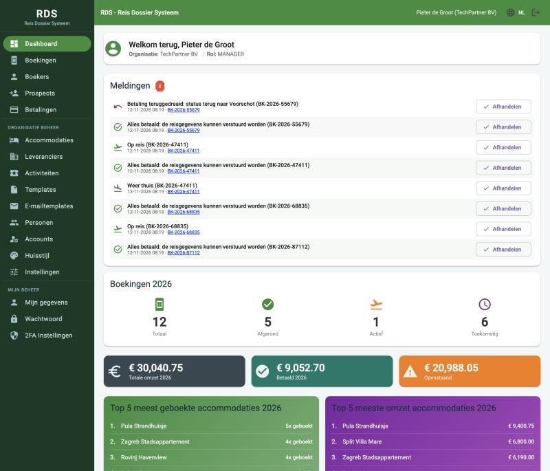
Vijf dingen om meteen te onthouden
1. Alles hangt aan de boeking
Offertes, documenten, e-mails en betalingen maak je vanuit de boeking. In de schermen Templates en E-mailtemplates staan alleen de sjablonen.
2. De status regelt zich zelf
Offerte versturen, akkoord, betalingen en reisdatums zetten de status. Jij kiest hem niet in een lijst.
3. Geschiedenis wordt niet gewist
Documenten, betalingen, verzonden e-mails en statuswijzigingen blijven altijd bewaard.
4. Meldingen vertellen wat jij moet doen
Alles betaald, op reis, weer thuis of een terugboeking: je ziet het op het dashboard en handelt het af.
5. Je ziet wat je mag
Ontbreekt een knop of menu-item, dan heeft je rol daar geen recht op. Vraag het een manager.
2. Inloggen en uitloggen
- Open RDS in je browser. Heb je geen geldige sessie, dan kom je op het inlogscherm.
- Vul je gebruikersnaam en wachtwoord in en kies Inloggen.
- Heb je twee-factor-verificatie aan, dan vraagt RDS daarna om de 6-cijferige code uit je authenticator-app (zie hoofdstuk 14).
- Je komt op het Dashboard.
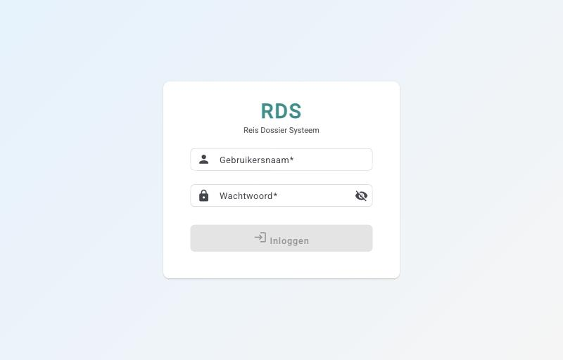
Zodra je inlogt, kijkt RDS of er boekingen van je organisatie op reis zijn gegaan of weer thuis zijn, en zet die status meteen goed (met een melding). Dat gebeurt ook elke nacht.
Na ongeveer een uur word je automatisch uitgelogd en kom je weer op het inlogscherm. Zorg dat je werk is opgeslagen voor je een pauze neemt.
Staat bij je account Wachtwoord moet gewijzigd worden aan, dan stuurt RDS je eerst naar het scherm Wachtwoord. Kies een nieuw wachtwoord (minimaal 8 tekens) en werk daarna gewoon verder.
Uitloggen doe je met het pijl-icoon rechtsboven. Daar staan ook je naam met organisatie en de taalwisselaar (Nederlands of Engels; RDS onthoudt je keuze).
3. Het scherm leren kennen
- Menu links. Je ziet alleen de onderdelen waar je recht op hebt. De kleur volgt de huisstijl van je organisatie.
- Balk bovenin. Je naam met organisatie, de taalwisselaar en Uitloggen.
- Werkgebied. Het scherm dat je hebt geopend.
- Berichten onderaan (opgeslagen, verstuurd, een foutmelding) verdwijnen na een paar seconden vanzelf.
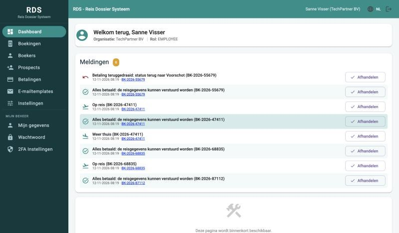
Lijsten: één vaste manier van werken
Elke lijst werkt hetzelfde: een zoekveld bovenin, de gegevens in kolommen en aan het einde van elke regel de actie-iconen. Klikken op de regel zelf doet niets. De kleur van een icoon of knop laat zien hoe voorzichtig je moet zijn:
| Icoon of knop | Kleur | Wat het doet | Risico |
|---|---|---|---|
| oog | blauw | Inzien: alleen lezen | geen |
| + Toevoegen, nieuw | groen | Toevoegen: er komt iets bij | laag |
| potlood, Bewerken, Status terugzetten, Afronden | violet | Wijzigen van bestaande gegevens | middel |
| mail, Offerte versturen | oranje-rood | Versturen: gaat naar de klant en is niet terug te halen | hoog |
| prullenbak | rood | Verwijderen: altijd eerst met een bevestiging | hoog |
Handige afspraken
- Bevestigen. Verwijderen en versturen vragen altijd om een bevestiging in een eigen venster.
- Alleen inzien. Met het oog-icoon opent een scherm in alleen-lezen-stand, zonder opslaan- of verwijderknoppen.
- Dubbelklikken. Een knop Opslaan of Versturen verwerkt een tweede klik niet, dus je maakt niets dubbel.
- Verwijderen kan niet altijd. Hangen er documenten, betalingen of verzonden e-mails aan een boeking, dan weigert RDS het verwijderen. Dat is bewust: rond de boeking dan af.
4. Boekers en prospects
Een prospect is iemand die nog niet heeft geboekt; een boeker is een klant met een boeking. Het is dezelfde persoon in RDS: zodra er voor een prospect een boeking ontstaat, wordt hij vanzelf boeker. In het menu staan ze apart: Prospects en Boekers.
Een nieuwe klant: registreer een prospect
Iedere nieuwe klant begint als prospect. Kies in Prospects op Registreer prospect; voornaam, achternaam en een geldig e-mailadres zijn verplicht.
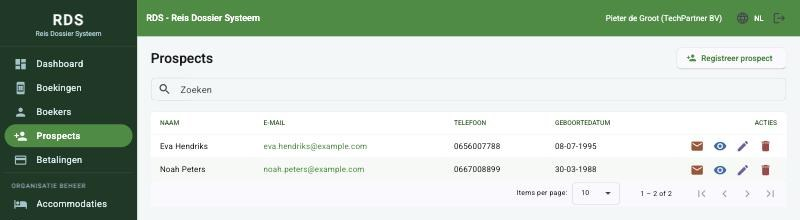
Boekers
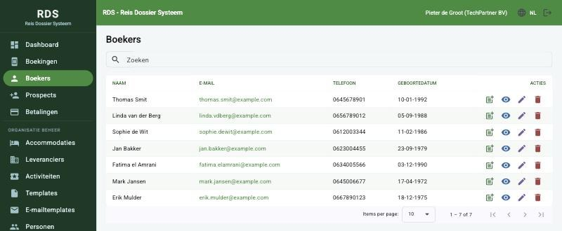
- Zoeken op naam, e-mailadres of telefoonnummer.
- Bewerken met het potlood: persoonsgegevens en adressen (woon-, factuur-, accommodatie- of leveranciersadres).
- Een boeking starten met het groene icoon. Heeft de boeker al lopende boekingen, dan kies je eerst of je een bestaande opent of een nieuwe maakt.
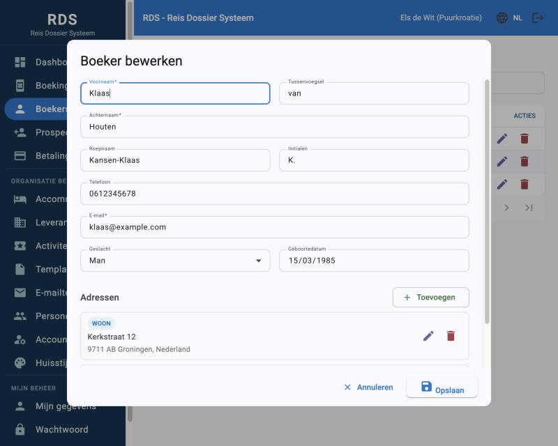
De status van een boeker regelt RDS
| Status | Wanneer |
|---|---|
| prospect | er is nog geen boeking |
| active | er is minstens één boeking die nog niet is afgerond |
| nietactief | alle boekingen zijn afgerond; met een nieuwe boeking wordt de boeker weer actief |
Je kiest deze status nergens zelf; RDS rekent hem uit bij elke wijziging van een boeking.
5. De boeking
De boeking is het hart van RDS. Het menu Boekingen toont alle boekingen met nummer, periode, status en bedrag. Zoek op boekingsnummer of naam van de boeker, filter op periode of status, en open een boeking met het oog (inzien) of het potlood (bewerken).
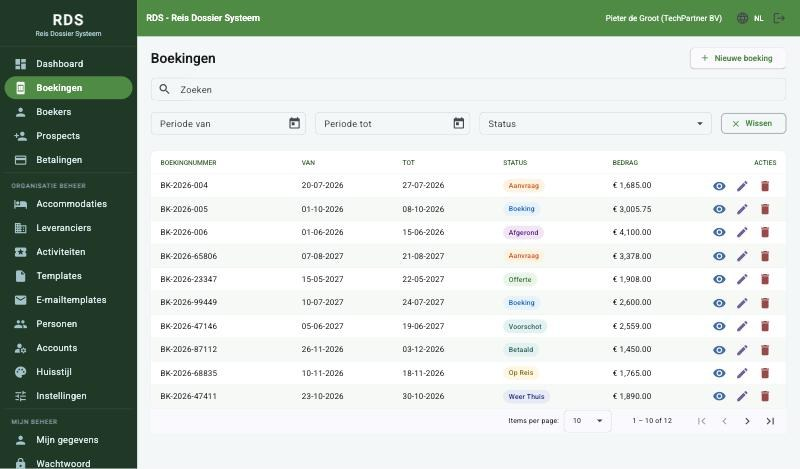
Een boeking beginnen
Een boeking ontstaat altijd vanuit een bestaande boeker of prospect. Kies Nieuwe boeking en selecteer de hoofdboeker (of start vanuit Boekers met het groene icoon). Staat de klant er nog niet in, registreer hem dan eerst als prospect (hoofdstuk 4).
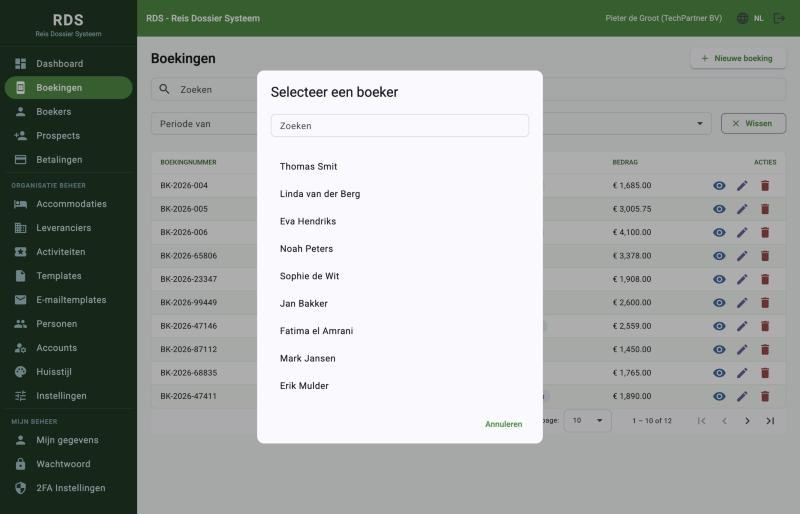
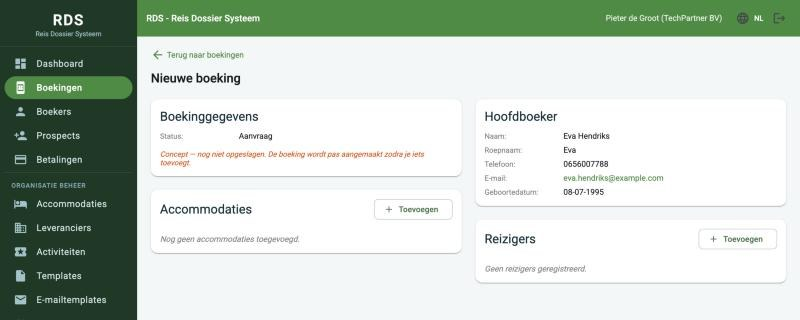
Het boekingsscherm
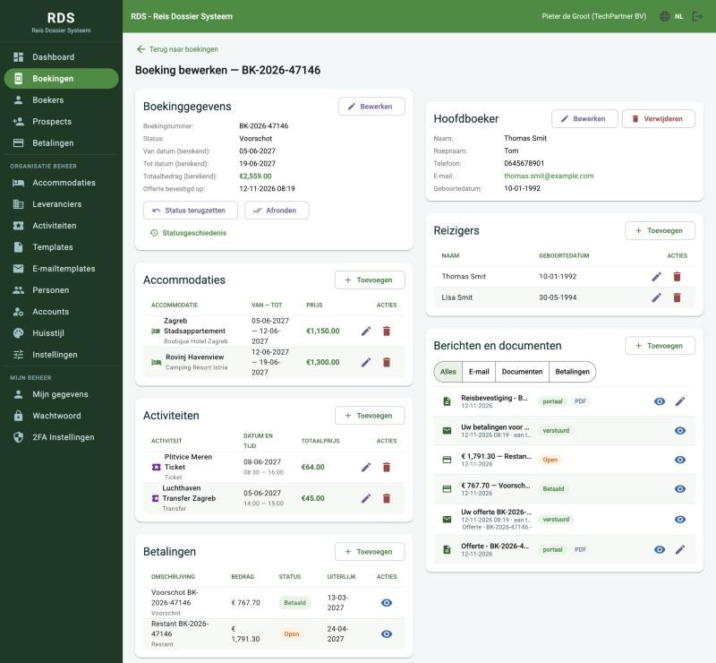
| Kaart | Wat je ziet | Wat je kunt doen |
|---|---|---|
| Boekinggegevens | boekingsnummer, status, periode en totaalbedrag (berekend), en Offerte bevestigd op | Offerte versturen (aanvraag en offerte), Bewerken (alleen het vinkje Offerte bevestigd), Status terugzetten, Afronden (manager), Statusgeschiedenis. Zie hoofdstuk 12. |
| Meldingen | de meldingen van deze boeking, open bovenaan | Afhandelen (hoofdstuk 10); de kaart staat er alleen als er meldingen zijn |
| Hoofdboeker | naam, roepnaam, telefoon, e-mail, geboortedatum | Bewerken; Verwijderen koppelt de boeker los (de boeker zelf blijft bestaan); Toevoegen als er geen hoofdboeker is |
| Accommodaties, Activiteiten, Reizigers | de onderdelen van de reis | toevoegen, bewerken, verwijderen (hoofdstuk 6) |
| Betalingen | omschrijving met soort, bedrag, status en uiterlijke betaaldatum | Toevoegen; het oog opent het betalingsvenster (hoofdstuk 9) |
| Berichten en documenten | e-mails, documenten en betalingen op datum, nieuwste bovenaan | Toevoegen → e-mail of document; filteren op soort; bekijken (hoofdstuk 7 en 8) |
Periode en totaalbedrag rekent RDS uit de verblijven en activiteiten; je vult ze nergens apart in. De status zie je hier wel, maar je kiest hem niet in een lijst: zie hoofdstuk 12.
6. Reizigers, verblijven en activiteiten
De inhoud van de reis voeg je toe in de kaarten van de boeking. Accommodaties, leveranciers en activiteiten kies je uit een lijst die je manager bijhoudt (het inrichten daarvan staat in hoofdstuk 15).
Verblijven (accommodaties)
Kies in de kaart Accommodaties op Toevoegen: accommodatie, leverancier, van-datum, tot-datum en prijs.
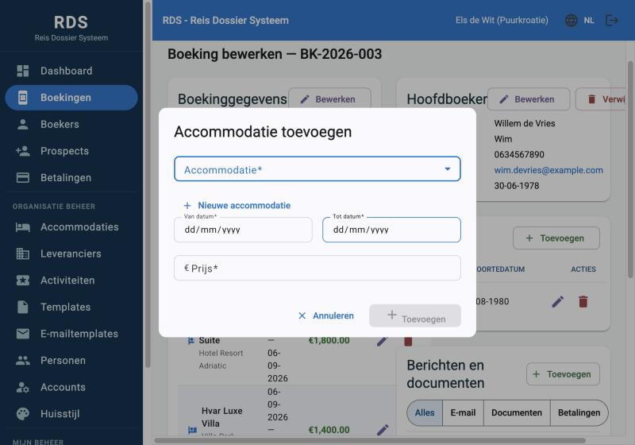
- RDS controleert de periodes. Bij overlap of een gat tussen twee verblijven kies je Toch opslaan of Aanpassen.
- De vroegste begindatum is de vertrekdatum van de reis, de laatste einddatum de terugkeerdatum. Daarop baseert RDS de betaaltermijnen en de statussen Op reis en Weer thuis.
- Wijzig je een prijs nadat de klant akkoord is, dan rekent het restant automatisch mee (hoofdstuk 9).
Activiteiten
Kies de activiteit (tour, excursie, ticket of transfer), de datum, de van- en tot-tijd, het trefpunt en de totaalprijs. Ligt de eindtijd vóór de begintijd, dan eindigt de activiteit de volgende dag; RDS laat dat zien. De activiteiten tellen mee in het totaalbedrag.
Reizigers
Voornaam en achternaam zijn verplicht; tussenvoegsel, initialen, geslacht en geboortedatum zijn optioneel. De hoofdboeker is niet automatisch reiziger: reist hij mee, voeg hem dan ook als reiziger toe.
7. Documenten
Een document is een bestand bij een boeking: de offerte, een reisbevestiging, een voucher of een geüploade PDF. De offerte maakt RDS zelf bij Offerte versturen (hoofdstuk 12). Andere documenten maak je met Toevoegen → Document in de kaart Berichten en documenten.
| Manier | Zo werkt het |
|---|---|
| Genereren | Kies een Word-template (bijvoorbeeld Reisbevestiging of Voucher), kies PDF of DOCX en kies Genereer. RDS vult de gegevens van de boeking in het sjabloon in. |
| Uploaden | Sleep een bestand in het vak, kies Kies bestand of haal het op via een internetadres. Alleen PDF is toegestaan. |
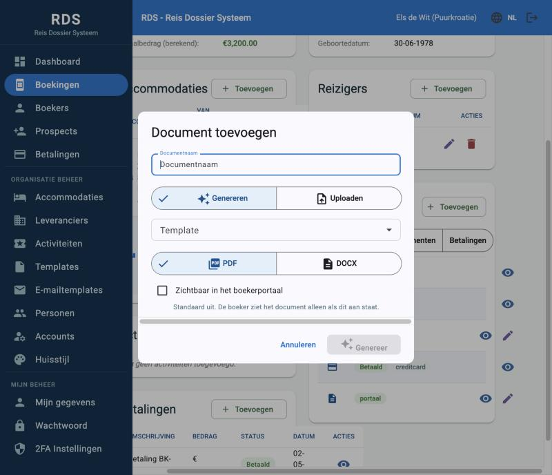
Alleen als Zichtbaar in het boekerportaal aanstaat. Je wijzigt dat later met het potlood bij het document in de tijdlijn. De offerte die RDS maakt, staat meteen zichtbaar. Een document kun je niet verwijderen; zet het vinkje uit als de klant het niet mag zien.
8. E-mail
RDS verstuurt drie soorten mail aan de hoofdboeker van een boeking:
| Wanneer | Wie start hem | |
|---|---|---|
| Offertemail met de offerte-PDF als bijlage | bij Offerte versturen | jij, met de knop |
| Betaalmail met de betalingen en hun uiterlijke datum | zodra de klant akkoord is en de betalingen zijn aangemaakt | RDS, vanzelf |
| Elke andere mail uit een e-mailtemplate | wanneer jij wilt | jij, met Toevoegen → E-mail aan hoofdboeker |
Welke templates voor de offerte- en betaalmail worden gebruikt, kiest de manager bij Instellingen (hoofdstuk 15).
Zelf een mail versturen
- Kies in de boeking Toevoegen → E-mail aan hoofdboeker. (Voor een prospect: het mail-icoon in Prospects.)
- Kies een template.
- Kies Genereer voorbeeld: je ziet onderwerp en tekst precies zoals de klant ze krijgt.
- Kies Verstuur en bevestig.
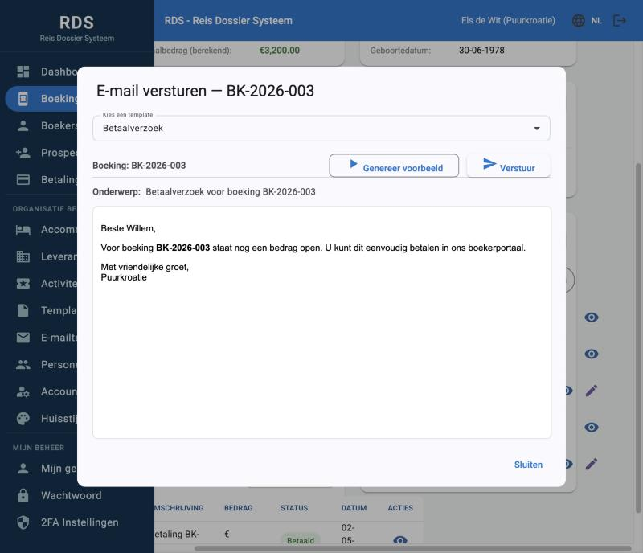
Verzonden mail terugkijken
Elke mail bij een boeking blijft in de tijdlijn staan, ook de offerte- en betaalmail. Open hem met het oog: je ziet afzender, ontvanger, datum, wie hem verstuurde, de bijlage en de tekst. Met Opnieuw versturen gaat dezelfde mail (met dezelfde bijlage) nog een keer.
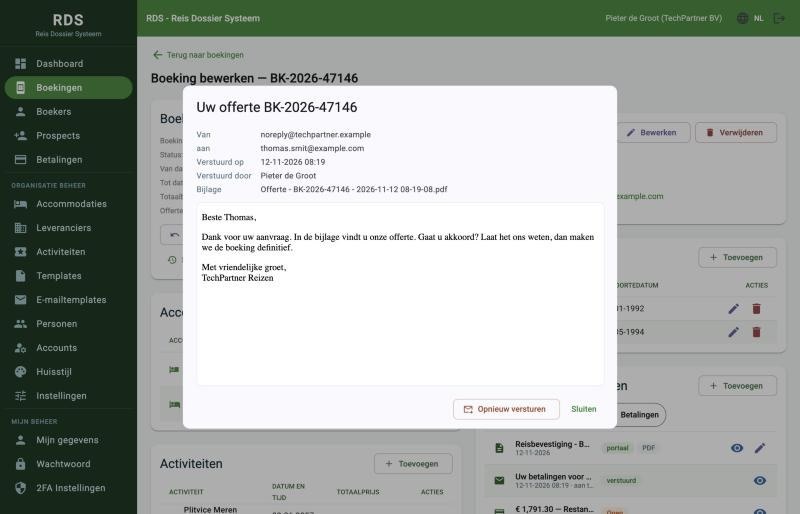
RDS meldt het als de hoofdboeker geen e-mailadres heeft of als je organisatie geen afzenderadres heeft. Vul het e-mailadres van de boeker in, of vraag de beheerder het afzenderadres in te stellen. Cc en bcc bestaan niet.
9. Betalingen
De klant betaalt online in zijn klantportaal via Mollie (iDEAL, creditcard). RDS maakt de betalingen zelf aan zodra de klant akkoord is met de offerte; Mollie meldt terug wanneer er is betaald.
Het betalingsschema
Bij het bevestigen van de offerte maakt RDS, op basis van de vertrekdatum en de keuzes van je organisatie (standaard 30% voorschot, 12 en 6 weken voor vertrek):
| Situatie op de dag van bevestigen | Betalingen |
|---|---|
| Vertrek ligt nog ver weg | Voorschot (30% van het totaal) uiterlijk 12 weken voor vertrek, en Restant (de rest) uiterlijk 6 weken voor vertrek |
| De voorschottermijn is al voorbij | het voorschot is direct te betalen, het restant blijft op 6 weken voor vertrek |
| Ook de restanttermijn is al voorbij | één Volledige betaling van het hele bedrag, direct te betalen |
- Restant rekent mee. Verandert het totaal na het akkoord (een verblijf erbij, een prijs aangepast), dan past RDS het restant aan, zolang de klant dat restant nog niet is gaan betalen. Het voorschot blijft gelijk.
- Zelf een betaling toevoegen kan nog steeds (kaart Betalingen → Toevoegen), bijvoorbeeld voor een extra. Zo'n betaling heeft de soort Overig en telt niet mee in het schema.
- De klant krijgt de betaalmail met het overzicht en ziet de betalingen meteen in zijn portaal.
Het betalingenoverzicht
Het menu Betalingen toont alle betalingen van je organisatie met bovenaan het totaal, wat is betaald en wat nog openstaat. Per betaling zie je de boeking, de omschrijving met de soort, de uiterlijke betaaldatum, het bedrag en de status.
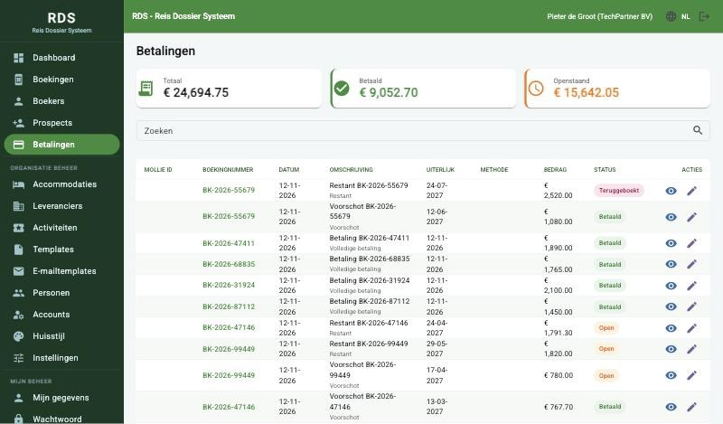
De statussen van een betaling
| Status | Betekenis |
|---|---|
| Open | klaargezet, de klant heeft nog niet betaald |
| In afwachting, Geautoriseerd | de klant is bezig, de bank bevestigt nog |
| Betaald | het geld is ontvangen |
| Mislukt, Geannuleerd, Verlopen | de betaling is niet gelukt; de klant kan opnieuw betalen |
| Teruggeboekt | eerst betaald, daarna teruggeboekt door bank of creditcardmaatschappij; telt niet meer als betaald |
Het betalingsvenster
Het oog-icoon bij een betaling opent de gegevens en de volledige statushistorie: wie of wat de status wanneer veranderde, met de reden bij een correctie.
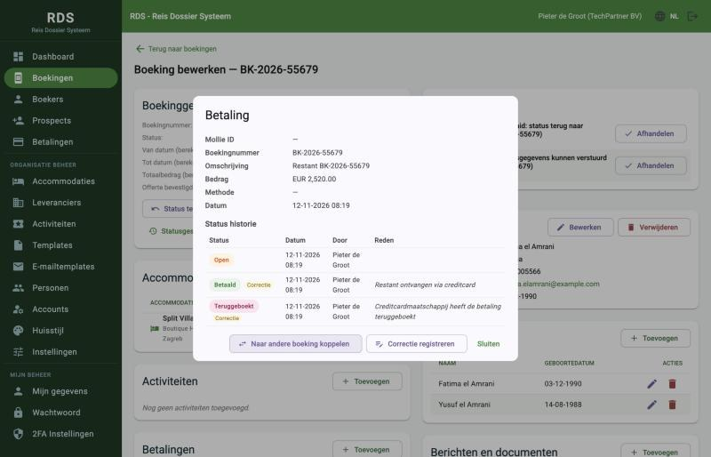
- Bedrag of omschrijving aanpassen kan alleen zolang de klant de betaling nog niet is gestart.
- Verwijderen kan nooit; betalingen blijven bewaard.
- Manager Correctie registreren: een nieuwe status (betaald, open, mislukt, geannuleerd of teruggeboekt) met een reden van minstens 5 tekens, bijvoorbeeld als de klant per bank betaalde. De correctie telt meteen mee: de status van de boeking wordt direct bijgewerkt.
- Manager Naar andere boeking koppelen als een betaling bij de verkeerde boeking staat, met een reden.
10. Meldingen
Een melding (in RDS ook notificatie) is iets wat jij moet oppakken. RDS maakt meldingen zelf aan op belangrijke momenten in de boekingsflow:
| Melding | Wanneer | Wat je doet |
|---|---|---|
| Alles betaald: de reisgegevens kunnen verstuurd worden | de laatste betaling is binnen | reisbescheiden klaarzetten en mailen (bijvoorbeeld met het template Reisgegevens), dan afhandelen |
| Op reis | de vertrekdatum is bereikt | bereikbaar zijn voor de klant; afhandelen als alles goed loopt |
| Weer thuis | de dag na de terugkeerdatum | nazorg: evaluatie, klachten, eindafrekening; afhandelen als het klaar is |
| Betaling teruggedraaid | een betaling is teruggeboekt of gecorrigeerd en de status ging terug | contact met de klant over de betaling |
Er komt nooit twee keer dezelfde open melding voor een boeking.
Waar zie je meldingen?
- Op het dashboard (kaart Meldingen): alle openstaande meldingen van je organisatie, met een link naar de boeking en een teller.
- In de boeking (kaart Meldingen, rechtsboven): alle meldingen van die boeking, open bovenaan, en bij afgehandelde wie dat deed en wanneer.
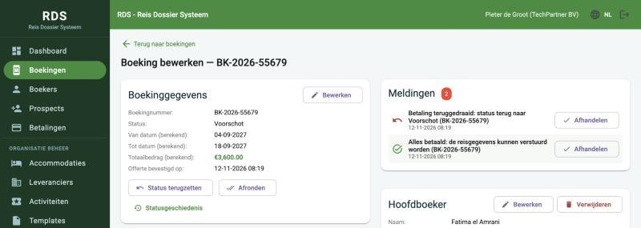
Afhandelen
Klaar met een melding? Kies Afhandelen. Op het dashboard verdwijnt hij; in de boeking blijft hij grijs staan met jouw naam en het tijdstip. Verwijderen kan niet.
Is een boeking Weer thuis en handel je de laatste open melding af, dan zet RDS de boeking meteen op Afgerond. Laat een melding dus open staan zolang er nog iets te doen is.
11. Templates
Een template (sjabloon) is een standaardtekst met invulvelden, zoals ${booking.bookingNumber} of de naam van de klant. Als je een document maakt of een mail verstuurt, vult RDS de velden met de gegevens van de boeking. Zo hoeft niemand een offerte of bevestiging met de hand te typen.
| Soort | Resultaat | Waar je hem gebruikt |
|---|---|---|
| Word-template menu Templates (manager) | een document als PDF of DOCX | Toevoegen → Document; de offerte bij Offerte versturen |
| E-mailtemplate menu E-mailtemplates | onderwerp en tekst van een e-mail | E-mail aan hoofdboeker; prospect-mail; de offertemail en de betaalmail |
De templates die het systeem gebruikt
Drie templates gebruikt RDS automatisch. Welke dat zijn, kiest de manager bij Instellingen:
| Rol | Soort | Voorbeeld in deze handleiding |
|---|---|---|
| Offertedocument | Word-template | Offerte: verblijven, periode en totaalprijs |
| Offertemail | e-mailtemplate | Offertemail: begeleidende tekst, de PDF gaat als bijlage mee |
| Betaalmail | e-mailtemplate | Betaalmail: tabel met de betalingen en hun uiterlijke datum |
Templates bekijken
Medewerkers kunnen e-mailtemplates bekijken (oog-icoon) en gebruiken; maken, wijzigen en verwijderen doet een manager (hoofdstuk 15).
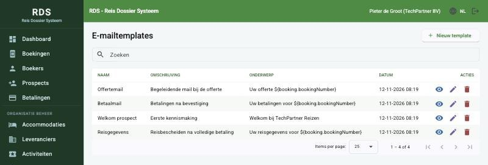
Wat kan er in een template?
| Groep | Voorbeelden van invulvelden |
|---|---|
| De ontvanger (bij een e-mail) | voornaam, volledige naam, e-mailadres, telefoon |
| De boeking | boekingsnummer, status, van- en tot-datum, totaalbedrag |
| De hoofdboeker (bij een document) | naam, adres, geboortedatum |
| Herhaalde tabellen | één regel per reiziger, verblijf, activiteit of betaling (omschrijving, soort, bedrag, uiterlijke datum, status) |
Een template met boekingsvelden werkt alleen bij een boeking; gebruik je hem voor een losse prospect, dan meldt RDS dat er een veld ontbreekt.
12. De boekingsflow: van aanvraag tot afgerond
Een boeking doorloopt acht statussen. Een paar stappen zet jij in gang (offerte versturen, akkoord vastleggen); de rest regelt RDS op basis van de betalingen en de reisdatums. Dit hoofdstuk loopt de hele flow door: per status wat jij doet, wat RDS doet en wat de klant krijgt.
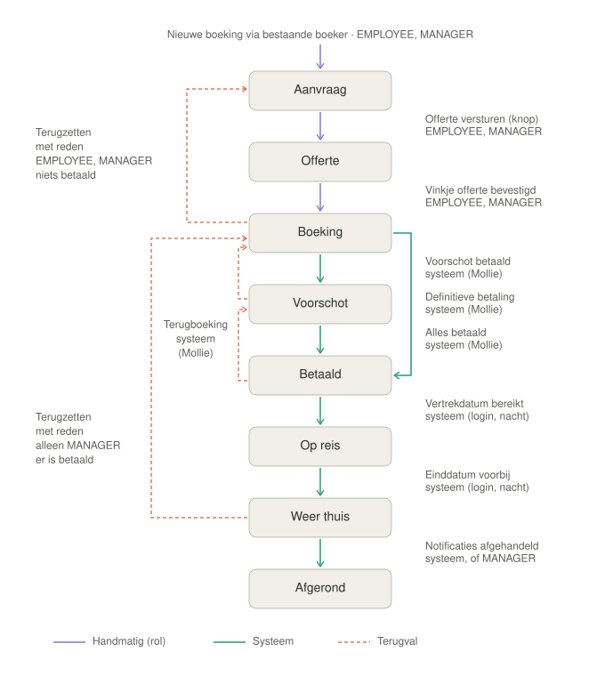
1 · Aanvraag De klant wil een reis
- Jij doet
- Registreer de klant als prospect (als hij er nog niet is), start Nieuwe boeking en voeg verblijven, activiteiten en reizigers toe (hoofdstuk 5 en 6).
- RDS doet
- Maakt de boeking aan bij het eerste onderdeel, met status Aanvraag en een boekingsnummer. De prospect wordt een actieve boeker.
- De klant krijgt
- Nog niets, tenzij jij een mail stuurt.
2 · Offerte Het voorstel gaat de deur uit
- Jij doet
- Kies onderin de kaart Boekinggegevens op Offerte versturen en bevestig.
- RDS doet
- Zet de status op Offerte, maakt de offerte als PDF uit het offertedocument, bewaart die bij de boeking (zichtbaar in het portaal) en mailt hem met de offertemail als bijlage naar de hoofdboeker.
- De klant krijgt
- De offertemail met PDF; de offerte staat ook in zijn portaal.
- Nog eens?
- Past de reis nog aan, verstuur dan opnieuw: er komt een nieuwe PDF en mail; de vorige blijven bewaard.
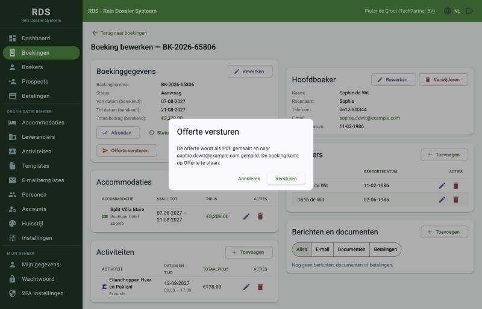
3 · Boeking De klant gaat akkoord
- Jij doet
- Kies Bewerken, vink Offerte bevestigd aan en sla op. Dat kan alleen in status Offerte, met een hoofdboeker en minstens één verblijf met een prijs.
- RDS doet
- Zet de status op Boeking, legt het moment vast (Offerte bevestigd op), maakt de betalingen aan volgens het betalingsschema (hoofdstuk 9) en verstuurt de betaalmail.
- De klant krijgt
- De betaalmail met wat hij wanneer betaalt; in zijn portaal staan de betalingen klaar.
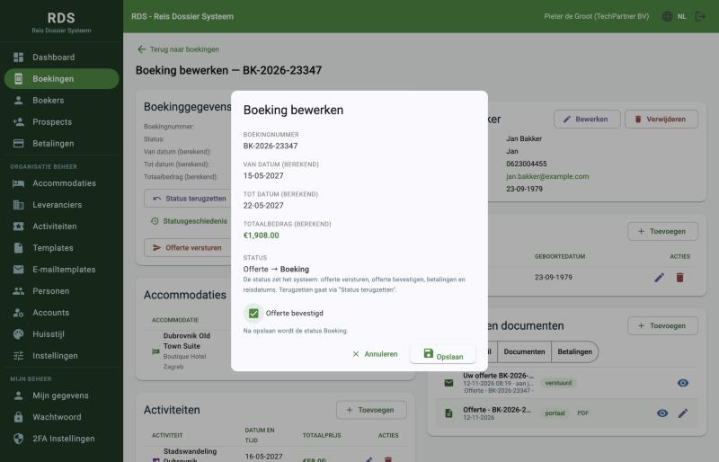
4 · Voorschot en 5 · Betaald De klant betaalt
- Jij doet
- Niets, tenzij de klant buiten Mollie om betaalt: dan registreert een manager een correctie (hoofdstuk 9).
- RDS doet
- Zodra het voorschot binnen is: status Voorschot. Zodra alles binnen is: status Betaald en de melding Alles betaald: de reisgegevens kunnen verstuurd worden.
- De klant krijgt
- In zijn portaal ziet hij wat betaald is en wat nog openstaat.
6 · Op reis en 7 · Weer thuis De reis
- Jij doet
- De reisgegevens versturen na de melding Alles betaald, en de meldingen afhandelen.
- RDS doet
- Op de vertrekdatum: Op reis met een melding. De dag na de terugkeerdatum: Weer thuis met een melding. RDS controleert dat bij het inloggen van een medewerker, elke nacht en direct na een betaling. Alleen een volledig betaalde boeking gaat op reis.
- De klant krijgt
- Zijn portaal toont de reis, aftellen tot vertrek en zijn documenten.
8 · Afgerond Alles is afgehandeld
- RDS doet
- Staat de boeking op Weer thuis en zijn alle meldingen afgehandeld, dan zet RDS haar op Afgerond. Zijn alle boekingen van een boeker afgerond, dan wordt de boeker nietactief.
- Manager
- Manager kan ook zelf Afronden, bijvoorbeeld bij een geannuleerde aanvraag. RDS vraagt eerst een bevestiging.
- Daarna
- Het dossier blijft volledig bewaard en leesbaar.
Als het anders loopt: terug naar een eerdere status
Een terugboeking
Wordt een betaling teruggeboekt (door de bank, de creditcardmaatschappij of als correctie), dan telt die betaling niet meer als betaald. RDS zet de boeking automatisch terug (bijvoorbeeld van Betaald naar Voorschot) en maakt de melding Betaling teruggedraaid.
Status terugzetten met een reden
Wil de klant iets anders, of is er een fout gemaakt? Kies Status terugzetten, kies een eerdere status en geef een reden van minstens 5 tekens. De reden komt in de statusgeschiedenis.
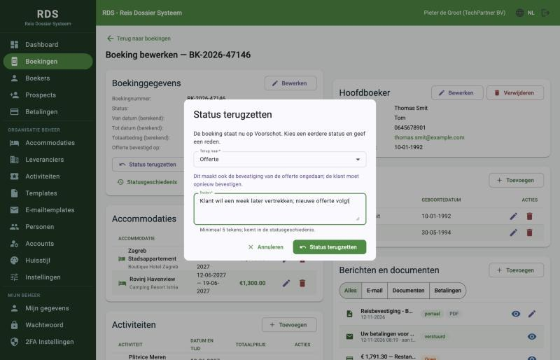
| Situatie | Medewerker | Manager |
|---|---|---|
| Er is nog niets betaald | ✓ | ✓ |
| Er is al iets betaald | – | ✓ |
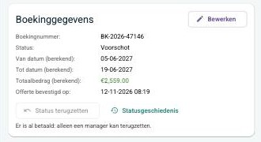
Zet je een boeking terug naar Boeking, Voorschot, Betaald, Op reis of Weer thuis, dan rekent RDS de status bij de volgende controle weer uit de betalingen en datums. Terugzetten heeft daar alleen zin als ook een betaling verandert. Terug naar Offerte of Aanvraag blijft wel staan.
De statusgeschiedenis
Elke statuswijziging wordt vastgelegd: van welke naar welke status, door het systeem of door wie, wanneer en waarom. Open hem met Statusgeschiedenis in de kaart Boekinggegevens.
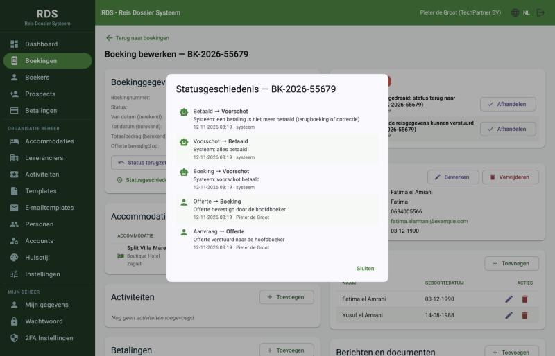
13. Wat ziet de klant?
De klant heeft een eigen pagina, het klantportaal. Daar ziet hij alleen zijn eigen boeking, op één pagina: de reis in één oogopslag met de voortgang van aanvraag tot afgerond, verblijven en activiteiten, de betalingen met hun uiterlijke datum, en de Berichten en documenten.
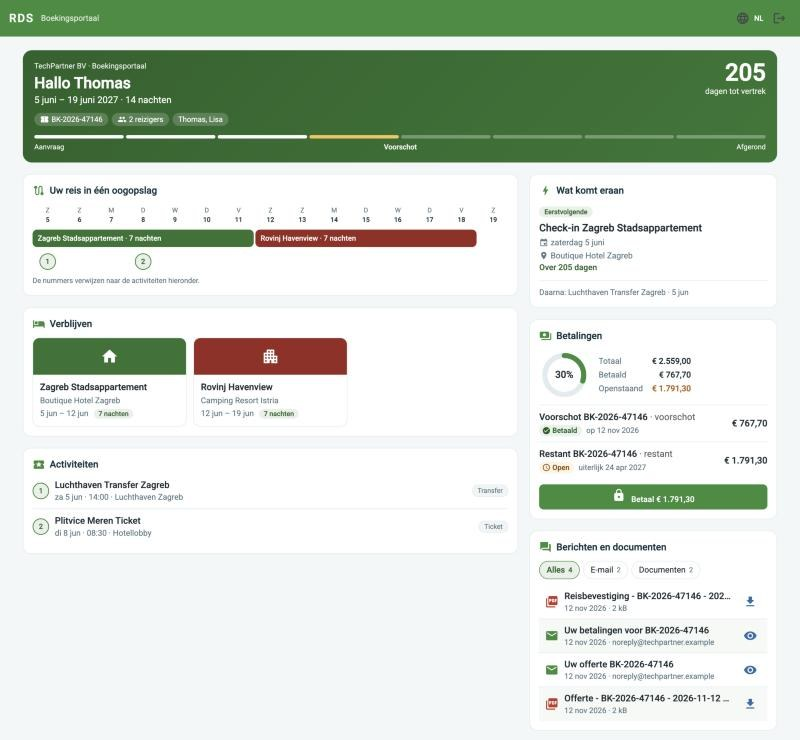
Wat bepaalt wat de klant ziet?
| Onderdeel | De klant ziet het als... |
|---|---|
| Reis, verblijven, activiteiten, reizigers | ze in de boeking staan |
| De voortgangsbalk | de status van de boeking (van aanvraag tot afgerond) |
| Documenten | Zichtbaar in het boekerportaal aanstaat; de offerte staat er meteen |
| E-mails | ze vanuit de boeking aan de hoofdboeker zijn verstuurd (ook offerte- en betaalmail) |
| Betalingen | ze bij de boeking horen; met soort en uiterlijke datum, en een knop om te betalen |
- De klant kan niets wijzigen; hij kan alleen betalen, documenten downloaden en berichten lezen.
- De klant logt in met zijn e-mailadres, het boekingsnummer en een eenmalige code.
De eenmalige code wordt op dit moment nog niet per e-mail naar de klant gestuurd. Klanten kunnen daarom nog niet zelfstandig inloggen. Vraag de beheerder wanneer dit is ingericht.
Instellingen
Eerst wat iedere medewerker en manager voor zichzelf instelt; daarna wat alleen een manager voor de hele organisatie inricht.
14. Instellingen voor medewerkers en managers Medewerker Manager
Onder Mijn beheer in het menu regel je je eigen account. Iedereen heeft deze drie schermen.
| Scherm | Wat je er doet |
|---|---|
| Mijn gegevens | je voornaam, tussenvoegsel en achternaam aanpassen; die naam zie je rechtsboven en bij alles wat je verstuurt of wijzigt |
| Wachtwoord | eerst je huidige wachtwoord, daarna twee keer het nieuwe (minimaal 8 tekens) |
| 2FA Instellingen | twee-factor-verificatie aan- of uitzetten |
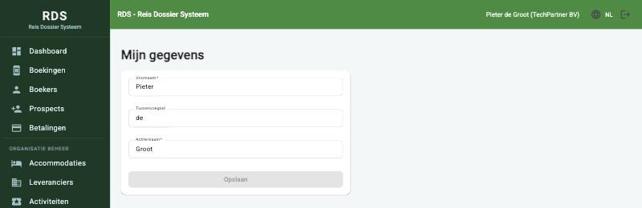
Twee-factor-verificatie (2FA)
Met 2FA heb je naast je wachtwoord een code uit een app op je telefoon nodig (zoals Google Authenticator of Authy). Dat beschermt je account als iemand je wachtwoord kent.
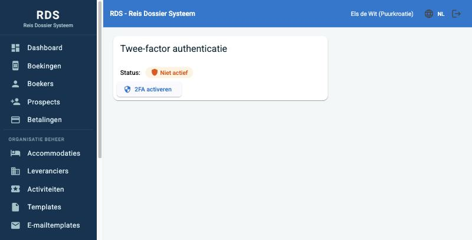
- Kies 2FA activeren en scan de QR-code met je authenticator-app (of voer de sleutel handmatig in).
- Bevestig met de code die de app toont.
- Bewaar de herstelcodes op een veilige plek; ze worden alleen nu getoond en werken elk één keer.
Log in met Herstelcode gebruiken en een van je herstelcodes. Heb je die ook niet meer, dan kan een manager of beheerder 2FA voor je resetten.
Taal
Met de wereldbol rechtsboven kies je Nederlands of Engels. RDS onthoudt je keuze op dit apparaat.
De organisatie-instellingen inzien
Het menu Instellingen toont de keuzes van je organisatie: welke templates voor de offerte en de betaalmail worden gebruikt en hoe het betalingsschema eruitziet. Als medewerker kun je ze bekijken maar niet wijzigen; zo weet je wat de klant krijgt. Het scherm staat beschreven in hoofdstuk 15.
15. Instellingen voor managers Manager
Als manager richt je RDS in voor je hele organisatie: wat het systeem automatisch doet, met welke sjablonen, welke accommodaties en activiteiten je team kan kiezen, wie er mag inloggen en hoe RDS eruitziet. Alles staat onder Organisatie beheer en Instellingen in het menu.
| Menu | Waarvoor | Paragraaf |
|---|---|---|
| Instellingen | offertetemplates, betalingsschema en betaalmail | 15.1 |
| Templates en E-mailtemplates | de sjablonen voor documenten en mails maken en wijzigen | 15.2 |
| Accommodaties, Leveranciers, Activiteiten | de stamgegevens waaruit je team kiest | 15.3 |
| Personen en Accounts | je collega's, hun inloggegevens en rol | 15.4 |
| Huisstijl | de kleuren en het logo van je organisatie in RDS | 15.5 |
| Dashboard | cijfers van het lopende jaar en de meldingen | hoofdstuk 1 |
15.1 Organisatie-instellingen: offerte en betalingen
Het scherm Organisatie-instellingen (menu Instellingen) bepaalt wat RDS automatisch doet in de boekingsflow.
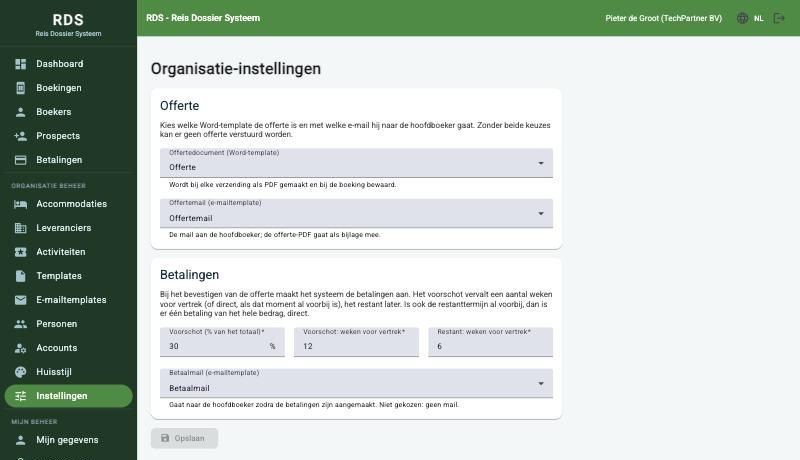
| Instelling | Wat het doet | Als het leeg is |
|---|---|---|
| Offertedocument (Word-template) | wordt bij Offerte versturen als PDF gemaakt | offerte versturen kan niet |
| Offertemail (e-mailtemplate) | de mail waarmee de offerte-PDF als bijlage meegaat | offerte versturen kan niet |
| Voorschot (% van het totaal) | 1 tot en met 100; standaard 30 | verplicht |
| Voorschot: weken voor vertrek | wanneer het voorschot uiterlijk betaald moet zijn; standaard 12 | verplicht |
| Restant: weken voor vertrek | wanneer het restant uiterlijk betaald moet zijn; standaard 6; moet minder zijn dan bij het voorschot | verplicht |
| Betaalmail (e-mailtemplate) | de mail met de betalingen die de klant na zijn akkoord krijgt | de betalingen worden aangemaakt, er gaat geen mail |
Met 30%, 12 en 6 weken en een reis van € 2.000 die op 1 juni vertrekt: een voorschot van € 600 uiterlijk 9 maart en een restant van € 1.400 uiterlijk 20 april. Bevestigt de klant pas op 1 mei, dan is er één betaling van € 2.000, direct.
Je kunt alleen templates van je eigen organisatie kiezen. Verwijder je een gekozen template, dan vervalt alleen die keuze; kies dan een nieuwe.
15.2 Templates maken en wijzigen
Word-templates beheer je in Templates, e-mailtemplates in E-mailtemplates. Beide lijsten hebben Nieuwe template, het oog (bekijken), het potlood (wijzigen) en de prullenbak; bij Word-templates downloadt de pijl het .docx-bestand.
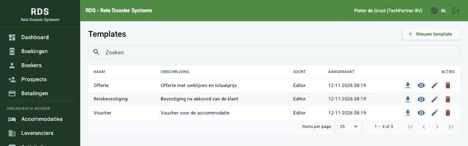
| Soort | Zo maak je hem |
|---|---|
| Word-template | In de editor maken (opmaak, tabellen, afbeeldingen, velden), of Word-bestand uploaden met velden die al in je .docx staan. Bij opslaan wordt de editortekst een echt Word-document. |
| E-mailtemplate | naam, omschrijving, onderwerp (mag velden bevatten) en tekst in dezelfde editor |
De editor
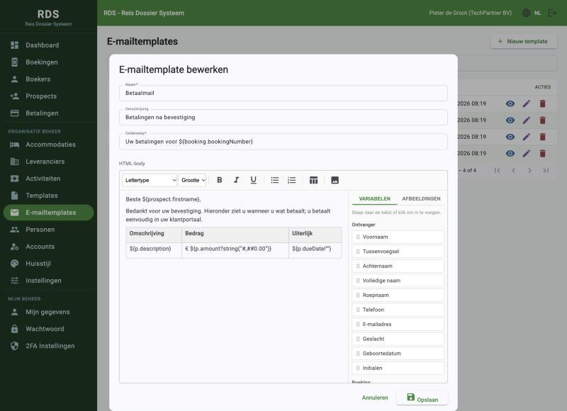
Herhaalde tabellen
Een herhaalde tabel herhaalt de laatste rij voor elk item. Zet de cursor in een tabel, kies het tabelicoon → Herhaalde tabel en kies Reizigers, Accommodaties, Activiteiten of Betalingen. RDS zet een kopregel en een rij met de passende velden neer.
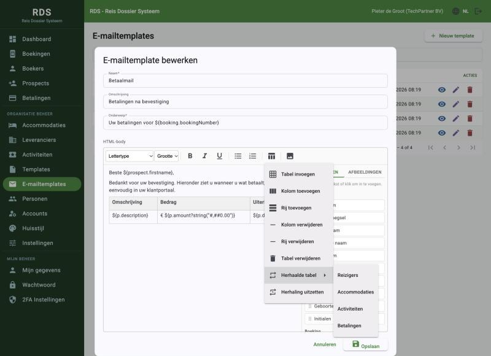
- Controleer een e-mailtemplate met Genereer voorbeeld in het verstuurvenster van een boeking (hoofdstuk 8).
- Bedragen voegt de editor in met twee decimalen. Schrijf in een velduitdrukking altijd dubbele aanhalingstekens.
- De volledige lijst met velden en valkuilen staat in de technische handleiding (
docs/handleiding.md, hoofdstuk 7).
15.3 Accommodaties, leveranciers en activiteiten
Dit zijn de stamgegevens waaruit je team in een boeking kiest (hoofdstuk 6). Je houdt ze bij in drie lijsten die hetzelfde werken.
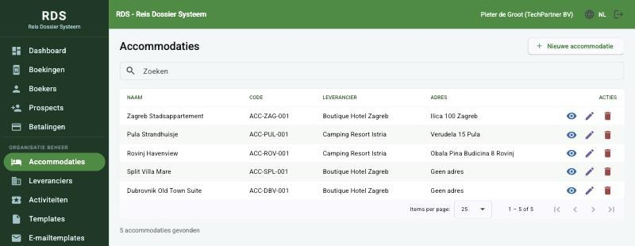
| Onderdeel | Verplicht | Goed om te weten |
|---|---|---|
| Accommodatie | code en naam | koppel een of meer leveranciers en adressen; een medewerker kan tijdens het boeken snel een accommodatie met alleen code en naam aanmaken, die vul jij aan |
| Leverancier | code en naam | met adressen en de gekoppelde accommodaties |
| Activiteit | naam en type | type is tour, excursie, ticket of transfer; de prijs geef je per boeking op |
Verwijder je een accommodatie of leverancier, dan verdwijnen ook de verblijven waarin ze voorkomen; RDS waarschuwt daarvoor. Hangt er een boeking met documenten of betalingen aan, dan weigert RDS het verwijderen.
15.4 Collega's: personen en accounts
Een collega heeft een persoon (naam) en een account (inloggegevens) met een rol. Jij mag de rollen Medewerker en Manager toewijzen, alleen binnen je eigen organisatie.
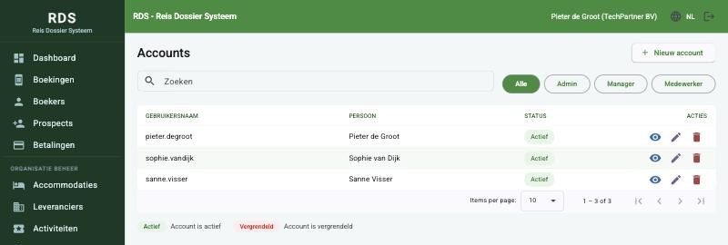
- Persoon aanmakenGa naar Personen → Nieuwe persoon. Voornaam en achternaam zijn verplicht; de persoon hoort automatisch bij je organisatie.
- Account aanmakenGa naar Accounts → Nieuw account: kies de persoon, een gebruikersnaam en een startwachtwoord. Zet Wachtwoord moet gewijzigd worden aan, dan kiest je collega bij de eerste keer inloggen zelf een nieuw wachtwoord.
- Rol toewijzenOpen het account met het potlood en kies onder Rollen een rol en Toevoegen.
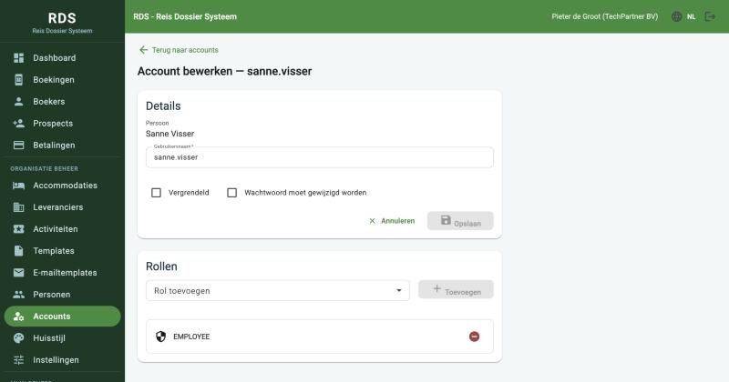
Een rolwijziging werkt pas bij de volgende keer inloggen van je collega (de sessie duurt een uur). Kwijtgeraakt 2FA-apparaat? Kies 2FA resetten in het account.
15.5 Huisstijl
Met Huisstijl bepaal je de kleuren van RDS voor je hele organisatie: de balk, het actieve menu-item, de tabelkoppen en de knoppen. Je ziet het resultaat direct in het voorbeeld.
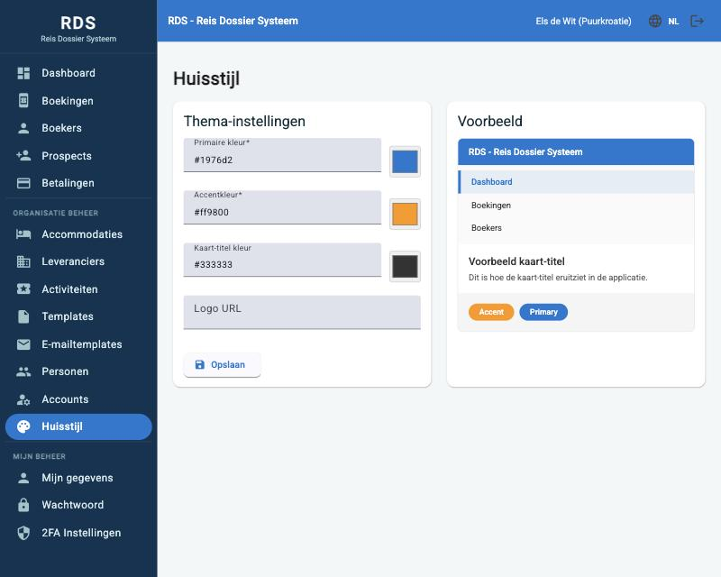
#1976d2. Zonder huisstijl gebruikt RDS het standaard-groenblauw.- Primaire kleur: de hoofdkleur (balk, actieve onderdelen).
- Accentkleur: de tweede kleur voor details.
- Kaart-titel kleur: de kleur van de koppen in de kaarten.
- Logo URL: het internetadres van je logo (maximaal 500 tekens).
Beheerder
Voor de beheerder van het platform: organisaties aanmaken en inrichten, gebruikers over organisaties heen, rollen en rechten.
16. Beheerder: organisaties, gebruikers en rechten Beheerder
De beheerder (rol ADMIN) beheert het platform zelf, niet de boekingen. Een beheerder ziet geen boekingen, boekers, betalingen of templates; daarvoor is de rol manager of medewerker binnen een organisatie. Het menu bevat Dashboard, het blok Beheer (Organisaties, Personen, Accounts, Rollen, Rechten) en Mijn beheer.
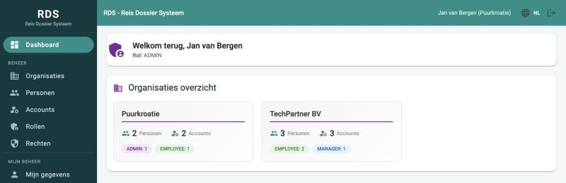
Organisaties
Het menu Organisaties toont alle reisorganisaties op het platform. Met het potlood open je een organisatie; met Nieuwe organisatie maak je er een met alleen een naam, met de Onboarding wizard in één keer compleet.
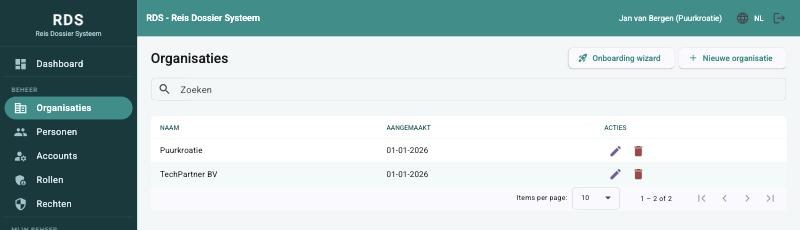
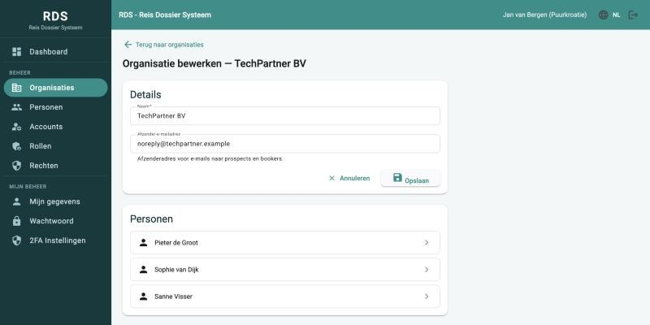
Een organisatie verwijderen wordt geweigerd zolang er nog gegevens aan hangen; de melding noemt hoeveel per soort.
Een nieuwe organisatie in gebruik nemen: de onboarding wizard
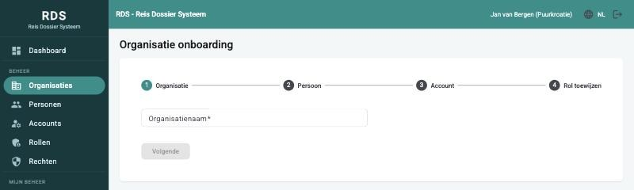
- Organisatiede naam van de organisatie.
- Persoonvoornaam, tussenvoegsel en achternaam van de eerste manager.
- Accountgebruikersnaam en startwachtwoord, met Wachtwoord moet gewijzigd worden.
- Rol toewijzenmeestal MANAGER. Daarna richt die manager de organisatie verder in (hoofdstuk 15); vul jij het afzender-e-mailadres in bij de organisatie.
Personen en accounts van alle organisaties
Een beheerder ziet personen en accounts van alle organisaties, met filterknoppen per organisatie, en kan ook de rol ADMIN toewijzen. Verder werken de schermen zoals bij de manager (hoofdstuk 15.4).
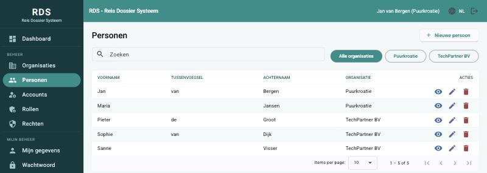
Rollen en rechten
Wat een rol mag, bepalen de rechten (in RDS: authorities) die eraan hangen. Er zijn drie rollen: ADMIN, MANAGER en EMPLOYEE.
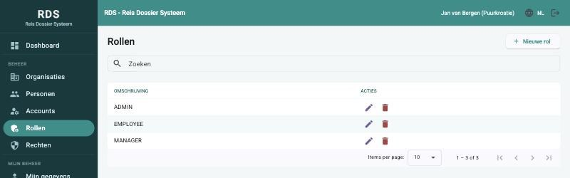
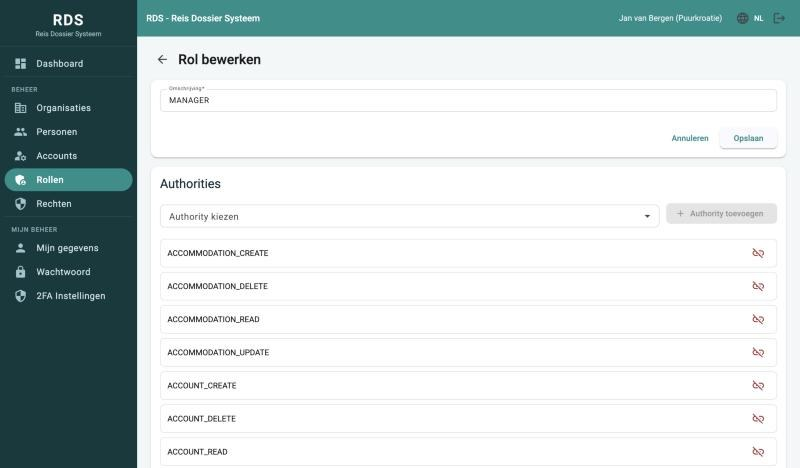
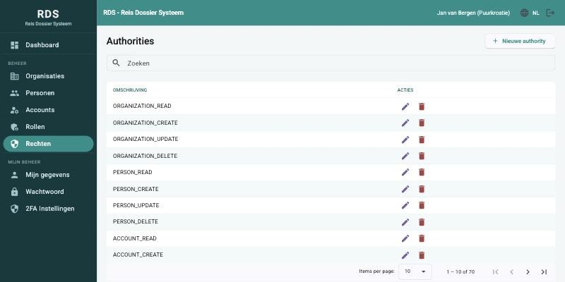
BOOKING_READ of QUOTE_SEND.De software controleert op deze namen. Een authority hernoemen of verwijderen laat functies stilletjes verdwijnen; een authority aan de verkeerde rol hangen geeft iemand meer rechten dan bedoeld. De standaardverdeling staat in bijlage A en in de technische handleiding (docs/handleiding.md, hoofdstuk 2).
Bijlage A. Wie mag wat?
Wat je mag, hangt af van je rol. RDS verbergt knoppen en menu-items waar je geen recht op hebt; de server controleert het nog eens. Dit is de standaardverdeling:
| Onderdeel | Medewerker | Manager | Beheerder |
|---|---|---|---|
| Boekingen, boekers, prospects en reizigers aanmaken, bekijken, wijzigen en verwijderen | ✓ | ✓ | – |
| Verblijven en activiteiten aan een boeking toevoegen | ✓ | ✓ | – |
| Offerte versturen en offerte bevestigen | ✓ | ✓ | – |
| Status terugzetten zolang er niets betaald is | ✓ | ✓ | – |
| Status terugzetten als er al betaald is | – | ✓ | – |
| Boeking afronden | – | ✓ | – |
| Meldingen bekijken en afhandelen | ✓ | ✓ | – |
| Documenten maken, uploaden en zichtbaarheid zetten | ✓ | ✓ | – |
| E-mail versturen en opnieuw versturen | ✓ | ✓ | – |
| Betalingen bekijken en zelf toevoegen | ✓ | ✓ | – |
| Betaling aanpassen (zolang niet gestart), corrigeren en naar andere boeking koppelen | – | ✓ | – |
| E-mailtemplates bekijken | ✓ | ✓ | – |
| Templates (Word en e-mail) maken, wijzigen en verwijderen | – | ✓ | – |
| Organisatie-instellingen bekijken | ✓ | ✓ | – |
| Organisatie-instellingen wijzigen | – | ✓ | – |
| Accommodaties, leveranciers en activiteiten kiezen in een boeking | ✓ | ✓ | – |
| Accommodaties, leveranciers en activiteiten beheren | – | ✓ | – |
| Huisstijl van de organisatie | – | ✓ | – |
| Personen en accounts van de eigen organisatie; rol Medewerker of Manager toewijzen | – | ✓ | ✓ |
| Organisaties, onboarding, rollen en rechten; rol Beheerder toewijzen | – | – | ✓ |
| Dashboard met cijfers | – | ✓ | – |
| Eigen gegevens, wachtwoord en 2FA | ✓ | ✓ | ✓ |
Medewerkers en managers zien nooit gegevens van een andere organisatie, ook niet als ze het adres van een scherm kennen. Alleen de beheerder ziet organisaties, personen en accounts over organisaties heen.
Bijlage B. Hulp bij problemen
Inloggen en je account
| Wat gebeurt er | Waarom | Wat je doet |
|---|---|---|
| Een menu-item of knop ontbreekt | je rol heeft daar geen recht op | vraag een manager het te regelen of voor je te doen |
| "Controleer gebruikersnaam en wachtwoord" | verkeerde gegevens, of je account is vergrendeld | controleer je wachtwoord; vraag een manager je account te ontgrendelen |
| Je 2FA-telefoon is kwijt | geen toegang tot je codes | gebruik een herstelcode, of laat een manager 2FA resetten |
| Na een rolwijziging verandert er niets | de wijziging werkt pas bij een nieuwe sessie | uitloggen en weer inloggen |
Offerte, status en meldingen
| Wat gebeurt er | Waarom | Wat je doet |
|---|---|---|
| Offerte versturen is grijs | de boeking heeft geen hoofdboeker met e-mailadres | koppel een hoofdboeker of vul zijn e-mailadres in |
| "Kies eerst bij Organisatie-instellingen een offertedocument en een offertemail" | de manager heeft de templates nog niet gekozen | vraag je manager dat in te stellen (hoofdstuk 15.1) |
| Het vinkje Offerte bevestigd is grijs | de boeking staat niet op Offerte of heeft geen hoofdboeker | verstuur eerst de offerte |
| Bevestigen geeft "Bevestigen kan pas als de boeking een verblijf met een prijs heeft" | zonder verblijf kan RDS geen betalingen maken | voeg eerst een verblijf met prijs toe |
| Ik kan de status niet kiezen | dat is bewust: RDS zet de status | gebruik Offerte versturen, het vinkje, of Status terugzetten |
| Status terugzetten is grijs | er is al betaald; dan mag alleen een manager | vraag je manager |
| Na terugzetten staat de status later weer terug | binnen Boeking tot Weer thuis rekent RDS de status uit de betalingen en datums | zet terug naar Offerte of Aanvraag, of pas de betaling aan |
| De boeking gaat niet op reis terwijl de vertrekdatum er is | nog niet alles is betaald | controleer de betalingen; bij betaling buiten Mollie: correctie door een manager |
| Een boeking blijft op Weer thuis | er staat nog een melding open | handel de meldingen af |
Documenten, e-mail en betalingen
| Wat gebeurt er | Waarom | Wat je doet |
|---|---|---|
| "Kan niet worden verwijderd" | er hangen documenten, betalingen of verzonden e-mails aan; dit is bewust | laat het staan en laat de boeking afronden |
| Een verkeerd document staat in de boeking | documenten kunnen niet worden verwijderd | zet Zichtbaar in het boekerportaal uit en maak een nieuw document |
| Uploaden wordt geweigerd | alleen PDF is toegestaan | sla het bestand op als PDF |
| E-mail versturen mislukt | de hoofdboeker heeft geen e-mailadres, of de organisatie geen afzenderadres | vul het e-mailadres in; vraag de beheerder het afzenderadres in te stellen |
| "Onbekende of lege placeholder" | een template met boekingsvelden is voor een prospect gebruikt | verstuur de mail vanuit een boeking, of kies een template zonder boekingsvelden |
| De klant kreeg geen betaalmail | er is geen betaalmail gekozen bij Instellingen | vraag de manager er een te kiezen; stuur zo nodig zelf een mail |
| "Deze betaling bestaat al bij Mollie" | de klant is al begonnen met betalen; de betaling staat vast | gebruik een correctie of koppel haar om (manager) |
| De klant ziet de betaalstatus niet bijgewerkt | de melding van Mollie is er nog niet | even wachten; het portaal ververst zelf |
Noteer wat je deed, het boekingsnummer en de melding op je scherm (een screenshot helpt) en neem contact op met je manager of beheerder.
Bijlage C. Begrippen en statussen
Statussen van een boeking
| Status | Betekenis | Wie of wat zet hem |
|---|---|---|
| Aanvraag | het dossier is geopend | RDS, bij de nieuwe boeking |
| Offerte | de offerte is verstuurd | jij, met Offerte versturen |
| Boeking | de klant is akkoord; betalingen staan klaar | jij, met het vinkje Offerte bevestigd |
| Voorschot | het voorschot is betaald | RDS, na de betaling |
| Betaald | alles is betaald | RDS, met een melding |
| Op reis | de klant is onderweg | RDS, op de vertrekdatum, met een melding |
| Weer thuis | de klant is terug; nazorg | RDS, de dag na de terugkeer, met een melding |
| Afgerond | alles is afgehandeld | RDS als alle meldingen zijn afgehandeld, of een manager |
Begrippenlijst
| Begrip | Uitleg |
|---|---|
| Boeking | het reisdossier, met een boekingsnummer zoals BK-2026-47146 |
| Boeker / hoofdboeker | de klant die de reis boekt; bij een boeking de hoofdboeker |
| Prospect | een potentiële klant die nog niet heeft geboekt |
| Reiziger | iemand die meereist op een boeking |
| Accommodatie / verblijf | hotel, appartement of villa; in een boeking een verblijf met periode en prijs |
| Leverancier | de partij waarvan je een verblijf inkoopt |
| Activiteit | tour, excursie, ticket of transfer |
| Concept-boeking | een voorgevuld scherm voor een boeking die nog niet is opgeslagen |
| Offerte | het voorstel aan de klant, als PDF gemaakt uit het offertedocument |
| Betalingsschema | de betalingen die RDS maakt bij het akkoord: voorschot en restant, of één volledige betaling |
| Voorschot / restant | het eerste deel van de reissom en de rest, elk met een uiterlijke betaaldatum |
| Terugboeking | een betaling die achteraf door bank of creditcardmaatschappij is teruggedraaid |
| Melding (notificatie) | iets wat een medewerker moet oppakken; wordt afgehandeld, niet verwijderd |
| Statusgeschiedenis | alle statuswijzigingen van een boeking met wie, wanneer en waarom |
| Template | sjabloon met invulvelden voor een Word-document of een e-mail |
| Document | een bestand bij een boeking, gemaakt uit een template of geüpload als PDF |
| Klantportaal | de eigen pagina van de klant met zijn reis, documenten en betalingen |
| Mollie | de online betaaldienst waarmee klanten betalen |
| Organisatie-instellingen | de keuzes van je organisatie voor offerte, betalingsschema en betaalmail |
| Rol / recht (authority) | medewerker, manager of beheerder; elke rol heeft een set rechten |
| 2FA | een tweede controle bij het inloggen: een code uit een app |
| Huisstijl | de kleuren en het logo van je organisatie in RDS |
Deze handleiding beschrijft RDS zoals het op 12 november 2026 werkt. De technische kant (rechtenmodel, koppelingen, installatie) staat in docs/handleiding.md.